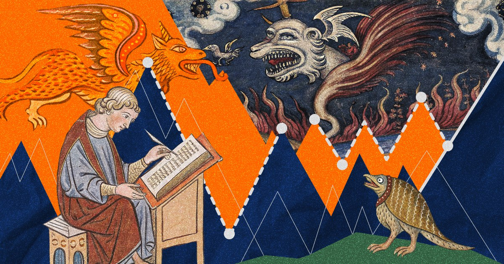

DH Tools
Цифровые технологии в профессиональной деятельности

Средневековый студент — источникО курсе
Курс представляет собой переход от теоретического знакомства с областью цифровых гуманитарных исследований к её практической реализации. На каждом занятии мы разбираем реальное исследование, в котором применяются цифровые методы, обсуждаем его методологию, а затем воспроизводим ключевые технические решения средствами Python.
Курс ориентирован на студентов гуманитарных программ — историков, философов, культурологов — и входит в минидигри «Исследователь Digital Humanities» факультета гуманитарных наук НИУ ВШЭ.
Преподаватель
Кирилл Васильев — лингвист, переводчик; бакалавр МГПУ; студент магистратуры «Компьютерная лингвистика» НИУ ВШЭ.
Формат
Курс рассчитан на 8 занятий по две пары. Основная часть занятий будет происходить по следующему плану:
- Разбираем и обсуждаем DH исследование, пытаемся понять концепцию и придумать иные прикладные применения.
- Воспроизводим исследование на Python, вместе обсуждаем сложные места.
- Заканчиваем самостоятельным закреплением темы в виде лабораторной работы или домашнего задания.
После майских праздников 5 занятие займёт ридинг-семинар: рассмотрим важные для DH и полезные на практике темы, которые не успеем разобрать на занятиях. Проводится в виде групповой работы: презентация статей и коллективное обсуждение.
Завершает курс защита финального мини-проекта на экзамене.
Оценивание
Пересдача любых форм контроля не предусмотрена. Оценка за активность на семинарах, домашние задания и лабораторные работы представляет собой среднее арифметическое всех полученных по соответствующей форме контроля оценок.
Активность на семинарах
Основная задача подготовки к семинару: внимательно прочитать статью, которую мы вместе будем разбирать; знать основные положения, подход авторов.
За участие в семинарах можно получить не более 1 балла с последующим переводом в десятибалльную систему. Баллы начисляются за активные рассуждения, ответы на вопросы, собственные изыскания по теме, удачные дополнения.
В случае отсутствия на семинаре по уважительной причине вес аудиторной активности и лабораторных работ не учитывается в итоговой формуле оценки.
Домашние задания и лабораторные работы
Лабораторные работы выполняются во время аудиторных занятий и должны быть сданы не позднее 23:59 дня проведения занятия.
Домашние задания выдаются сразу после занятия и принимаются до начала следующего занятия без снижения оценки. При сдаче работы с опозданием оценка снижается на 2 балла.
Жёсткий дедлайн: работы, выданные до майских, должны быть сданы до 15.05, выданные после майских — 15.06. Досдача домашнего задания после жёсткого дедлайна не предусмотрена.
Формула
\[ \] \[\begin{aligned} \text{ИТОГ} = & (0{,}15 \times \text{Семинарская активность}) \\ &+ (0{,}2 \times \text{ДЗ}) + (0{,}2 \times \text{ЛР}) \\ &+ (0{,}2 \times \text{Презентация статьи}) \\ &+ (0{,}25 \times \text{Проект}) \end{aligned}\]\[ \]